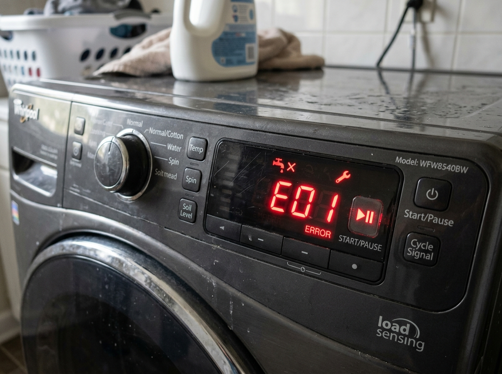

A broken washing machine brings laundry day to a sudden halt. Before you rush out to buy a new one, or spend money on repairs that might not last, it's crucial to weigh your options. Here’s a comprehensive guide to help you decide whether to repair or replace your washing machine.
The 50% Rule
A widely accepted industry standard is the "50% rule." If the cost of the repair is more than 50% of the price of a new, comparable washing machine, it is generally wiser to replace it. For example, if a new washer costs $600, you shouldn't spend more than $300 on repairs.
Age of the Appliance
The average lifespan of a modern washing machine is about 10 to 13 years. If your washer is under 5 years old, a repair is almost always the best route, as most major components still have plenty of life left. However, if your machine is approaching its 10th birthday, replacing it might save you money in the long run, as older machines are less energy-efficient and more prone to cascading failures.
Frequent Breakdowns
If you've had to call a technician multiple times over the past couple of years, your washing machine is likely turning into a money pit. Frequent breakdowns are a clear sign that the appliance is reaching the end of its useful life.
Energy Efficiency
Newer washing machines are significantly more energy and water-efficient than models built a decade ago. If your current machine is old and inefficient, the savings on your utility bills from a new Energy Star certified model can help offset the purchase cost.
Pro Tip: When calculating replacement costs, don't forget to factor in delivery, installation, and the cost of hauling away your old machine.